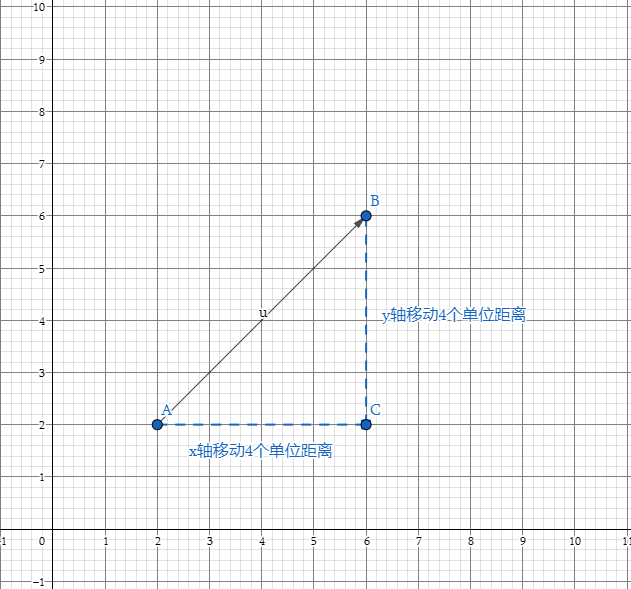

图形学的数学基础（一）：向量基础
图形学的数学基础（一）：向量
前边的话
本系列是阅读《3D数学基础： 图形和游戏开发（第二版）》整理汇总的学习笔记，整个系列的结构排布基于原书的章节安排，针对其中的每个知识点做了适当的补充和拓展，其中不免有遗漏和错误之处，望各位读者批评指正。本篇文章做为该系列的第一章，主要介绍向量相关内容，涉及空间中向量的几何意义，各种运算，重点介绍点乘和叉乘的几何解释及在图形学中的应用场景。
数学定义
对于数学家来说向量是一个数组，数组的长度代表向量所在的空间维度。程序中表示向量通常有两种方式，行向量（$Row Vector$）和列向量（$Column Vector$）,至于为什么要区分两种书写方式,我们放到矩阵章节再详细说明.
$V_{column} = \begin{bmatrix}1\\ 2\\ 3\end{bmatrix}$
$V_{row} = \begin{bmatrix}1&2&-1\end{bmatrix}$
几何定义
从几何学上讲,向量是具有大小和方向的有向线段.讨论向量在空间中的哪个位置,是没有意义的,向量不具备位置属性.向量是一种相对偏移量的表示方法.如下图二维笛卡尔坐标系中,向量U和V是相等的.
- 大小: 矢量的长度,矢量可以具有任何非负长度.
- 方向:空间中指定的方向.

笛卡尔坐标系下的向量
当使用笛卡尔坐标来描述向量时,每个坐标将度量相应维度中有符号位移.

向量与点的关系
点用于描述空间中的某一位置.向量用于描述空间中的一段位移,表达相对位置.那么点与向量之间有着怎样的关系呢?两者之间如何完成相互转换?其实很简单,本质上就一句话,任何点都可以表示为来自原点的向量.从原点开始按照向量[x,y]指定的量移动,最终会抵达点(x,y)所描述的位置, 同理向量[x,y]给出了从原点到点(x,y)的位移.